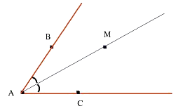

Биссектриса угла
- луч,
который исходит из
вершины угла,
проходит
между его
сторонами и делит угол пополам.

Свойства биссектис угла:
-
Любая точка биссектрисы угла равноудалена от его сторон
(или продолжений сторон).

-
Любая точка биссектрися угла, за исключением вершины угла,
является центром окружности, касающейся сторон (или
продолжений сторон) этого угла.

-
Биссектриса угла является осью симметрии самого угла,
а также угла, обазованного продолжением его сторон.